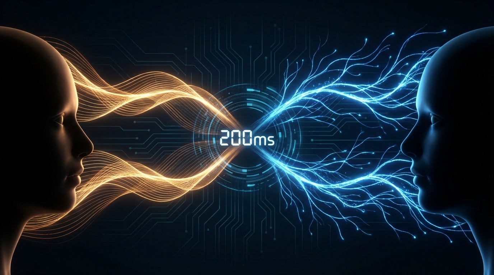

You Have 200 Milliseconds Before AI Feels Wrong. Nobody's Hitting That.
Humans evolved a 200ms conversational turn-taking instinct that holds across every language on Earth. The fastest voice AI responds in 320ms. Traditional pipelines take 2 seconds. The millisecond gap between human expectation and machine capability is why talking to AI still feels like talking to a bad phone connection.

Two hundred milliseconds. That's the gap between when one person stops talking and another starts, averaged across 10 languages on 5 continents. It doesn't matter if you're speaking Dutch, Japanese, Tzeltal, or Lao. The gap is roughly the same. Two hundred milliseconds. The blink of an eye takes longer.
In 2009, a team led by Tanya Stivers at the Max Planck Institute for Psycholinguistics published a study in PNAS that measured this timing across cultures. What they found was remarkable: despite vast differences in grammar, social norms, and conversational styles, humans everywhere converge on nearly the same rhythm when taking turns speaking. The variation is narrow. Danish speakers are slightly faster. Japanese speakers leave slightly longer pauses. But the central tendency holds at roughly 200 milliseconds across every language they measured.
This number is not arbitrary. It represents something deep about human cognition. To respond within 200ms of another person finishing their sentence, you have to start planning your response roughly 600ms before they stop talking. You're predicting the end of their utterance, formulating your reply, and queuing your speech motor system in parallel. It's one of the most complex real-time processing tasks the human brain performs, and you do it without thinking every time you have a conversation.
Now ask Alexa a question and count the silence.
The Telecom Standard That AI Can't Meet
Telecom engineers figured out the latency problem decades ago. ITU-T Recommendation G.114, the global standard for one-way voice transmission time, sets clear thresholds: below 150 milliseconds one-way delay, most users are satisfied. Between 150 and 400 milliseconds, quality degrades noticeably. Above 400 milliseconds, the call is effectively broken.
These numbers were established for voice calls, where both parties are human and the only delay comes from signal transmission. Modern VoIP systems achieve a minimum inherent latency of about 20 milliseconds, and consumer targets aim for under 150 milliseconds mouth-to-ear. Real-world measurements on average US networks show 160 to 300 milliseconds over a 500-mile distance, which is why long-distance calls occasionally have that half-second awkwardness where both people start talking at once.
Voice AI systems aren't dealing with transmission delay. They're dealing with something worse: thinking time.
The Pipeline That Eats Your Budget
A traditional voice AI pipeline has three stages. Speech-to-text converts your words into text. A large language model processes the text and generates a response. Text-to-speech converts that response back into audio. Each stage consumes part of the latency budget, and the stages run sequentially.
Here's the math that matters:
Voice AI Latency Budget (3-Stage Pipeline)
| Speech-to-Text | 200–500ms | best: ~100ms |
| LLM Inference | 300–1,000ms | best: ~150ms |
| Text-to-Speech | 200–500ms | best: ~135ms |
| Network Round-Trip | 20–100ms | best: ~10ms |
| Total | 720–2,100ms | best: ~395ms |
A typical three-stage pipeline produces a response in 720 milliseconds to 2.1 seconds. Even the absolute best-in-class components, strung together sequentially, sum to about 395 milliseconds. That's roughly double the human conversational gap. Under normal conditions, most voice AI systems take over a second. That's five times the natural human rhythm.
When OpenAI announced GPT-4o in May 2024, the headline number was 320 milliseconds average response time for voice. That represented a fundamental architectural shift: instead of running three separate models in sequence, GPT-4o processes audio natively, accepting sound as input and producing sound as output in a single pass. It cut the pipeline from three stages to one. At its fastest, it responds in 232 milliseconds. Close to human. Not quite there.
Why 200 Milliseconds Is a Harder Target Than It Looks
There's a subtlety in the 200ms number that makes the engineering challenge even steeper. Humans don't wait until the other person finishes talking to start processing. Sacks, Schegloff and Jefferson established in 1974 that conversational turn-taking is a predictive system, not a reactive one. Listeners predict the end of a speaker's utterance based on syntax, semantics, and prosody, and begin formulating their response roughly 600 milliseconds before the speaker finishes.
That means the 200ms gap is not "200ms of processing time." It's the visible tip of a process that started half a second earlier. Humans are running the equivalent of speculative execution on conversation: predicting the end of input, pre-computing the response, and delivering it within a narrow timing window that signals engagement and competence.
An AI system that waits for a complete utterance, processes it, and then responds is architecturally incapable of hitting this target. By the time voice activity detection confirms the speaker has stopped, the 200ms window is already closing. This is why the move to streaming architectures and end-to-end models matters so much. A system that starts generating its response while the user is still talking is the only path to natural timing.
In linguistics, the meaning of silence is precise. A gap under 200ms reads as engaged, attentive, ready. Between 200 and 500 milliseconds, something subtle shifts. Stivers found that gaps longer than roughly 700 milliseconds are systematically interpreted as "dispreferred" responses across cultures. The other person is about to say no. They're about to deliver bad news. They disagree. Silence, in conversation, is not neutral. It communicates reluctance.
Every AI system that takes more than 700 milliseconds to respond is, from a conversational-pragmatics perspective, telling you it doesn't want to answer.
The Lip-Sync Problem: When Eyes and Ears Disagree
Voice is only one modality. Video AI avatars, the increasingly common face of customer service bots and virtual assistants, have a different and in some ways harder timing problem: audio-visual synchronization.
Controlled tests by the ITU, published in Recommendation BT.1359-1, set the detection threshold for lip-sync errors: viewers notice when audio leads video by more than 45 milliseconds, or lags by more than 125 milliseconds. The ATSC broadcast standard is even tighter: audio should lead by no more than 15 milliseconds and lag by no more than 45 milliseconds. For film, the tolerance is just ±22 milliseconds.
There's an asymmetry worth noting. Humans are more tolerant of audio arriving slightly after the visual than before it. This makes physical sense: sound travels slower than light, so in the real world, you always see someone's lips move fractionally before you hear the sound. Our brains are calibrated for that direction of mismatch.
For AI video avatars, this creates a constraint stack. The avatar's lip movements must sync to the generated audio within 45 milliseconds, which means the rendering pipeline and the speech synthesis pipeline need to be tightly coupled. If the LLM takes 300 milliseconds to produce the first word, and the TTS takes 135 milliseconds to vocalize it, the avatar animator has to predict, buffer, or fake lip movements across that entire window. Get it wrong by 50 milliseconds and viewers register it as "off" without being able to articulate why. The uncanny valley isn't just about how faces look. It's about when they move.
The Robot Problem: Bodies Are Slow
Physical robots add another layer: mechanical latency. A humanoid robot that responds to a conversational prompt has to move its head, shift its posture, or gesture in synchronization with speech. Unlike pixels on a screen, actuators have inertia. A motor takes time to overcome static friction, accelerate, and decelerate. Even fast servo motors introduce 50 to 100 milliseconds of mechanical delay on top of any computational latency.
Teleoperation research provides useful benchmarks. The da Vinci surgical robot system achieves under 10 milliseconds end-to-end latency, which surgeons report feeling like direct manipulation. NASA's Lunokhod rover on the Moon operated with a 2.5-second round-trip delay, requiring pre-programmed waypoints rather than real-time steering. Military drone operators deal with 1.2 to 1.5 seconds of satellite relay latency and must be specifically trained to compensate for it. Research on teleoperation shows significant performance degradation and simulator sickness onset above 300 milliseconds of visual-motor mismatch.
For conversational humanoids like those being built by Figure, Sanctuary AI, and Tesla's Optimus program, the target is more forgiving than voice alone. Humans give physical entities slightly more temporal slack than disembodied voices, likely because we intuitively understand that bodies take time to move. But "more forgiving" still means sub-second. A humanoid that takes two seconds to react to a conversational cue reads as broken, not thoughtful.
The Perception Ladder
Bringing these thresholds together reveals a hierarchy of human timing sensitivity across modalities:
Human Latency Perception Thresholds
| Context | "Natural" | "Noticeable" | "Broken" |
| Film lip sync | ±22ms | ±45ms | >125ms |
| Gaming input | <20ms | 50–100ms | >150ms |
| Touch response | <50ms | 100–200ms | >300ms |
| Phone call | <150ms | 200–400ms | >400ms |
| Conversation turn | ~200ms | 500–700ms | >1,000ms |
| Robot response | <300ms | 500ms–1s | >2s |
One pattern emerges clearly. The closer a modality gets to face-to-face conversation, the tighter the tolerance. We'll accept a robot being slightly slow. We won't accept a voice being slightly slow. And we absolutely won't accept lips moving out of sync. Evolution calibrated us for these thresholds over millions of years of social interaction. AI has had about three years to catch up.
The Architecture Race
Companies that understand this are abandoning the three-stage pipeline. OpenAI's GPT-4o processes audio natively. Google's Gemini 2.0 handles multimodal input-output in a single forward pass. Cartesia's Sonic, built on state space model architectures that originated in the S4 and Mamba papers, achieves 135-millisecond model latency for text-to-speech by ditching Transformer attention entirely in favor of recurrent computation that naturally streams.
Streaming is driving the next shift: systems that begin generating responses before the user finishes speaking, using partial input to predict the full question and pre-compute likely answers. Groq's custom LPU chips produce tokens fast enough that LLM inference approaches single-digit milliseconds per token. On-device models, running on phone NPUs or wearable processors without any network round-trip, can eliminate 20 to 100 milliseconds of latency at the cost of model capability.
Streaming changes the economics. Instead of waiting for complete STT output before running the LLM, or complete LLM output before running TTS, each stage starts producing output as soon as partial input arrives. Speech-to-text emits words as they're recognized. The LLM begins generating after the first few words. TTS starts vocalizing the first sentence while the LLM is still producing the second. When every stage overlaps, the theoretical minimum collapses from 720 milliseconds (sequential sum) to something closer to the slowest single stage plus startup overhead, potentially under 300 milliseconds.
Limitations
Most turn-taking research, including the Stivers study, measured human-to-human conversation, not human-to-machine interaction. There's evidence that users adjust their expectations for AI, tolerating somewhat longer delays if response quality is high. A 500ms response that's insightful may beat a 200ms response that's wrong. The ITU standards were developed for voice telephony, not AI interaction, and the extent to which they transfer is not formally validated. Cultural variation in the Stivers data, while narrow, means "acceptable" is not a single universal number. No large-scale studies have systematically compared user satisfaction across specific latency bands for AI voice agents. And claimed latency figures from AI companies are measured under optimal conditions that may not reflect real-world deployment with variable network conditions and concurrent load.
The Bottom Line
The 200-millisecond conversational gap is not a design target chosen by a product team. It's a feature of the human species, conserved across cultures and languages, wired into neural circuits that predict speech timing before conscious thought engages. Every voice AI, video avatar, and conversational robot is measured against this clock whether its designers intended it or not. The best systems today are 1.5 to 10 times too slow. The architectural shift from sequential pipelines to end-to-end streaming models has cut the gap from an order of magnitude to less than a factor of two. Closing that last 120 milliseconds is the difference between a tool you talk at and a presence you talk with.
Sources
- study in PNAS. doi.org
- ITU-T Recommendation G.114. itu.int
- Cartesia's Sonic. cartesia.ai